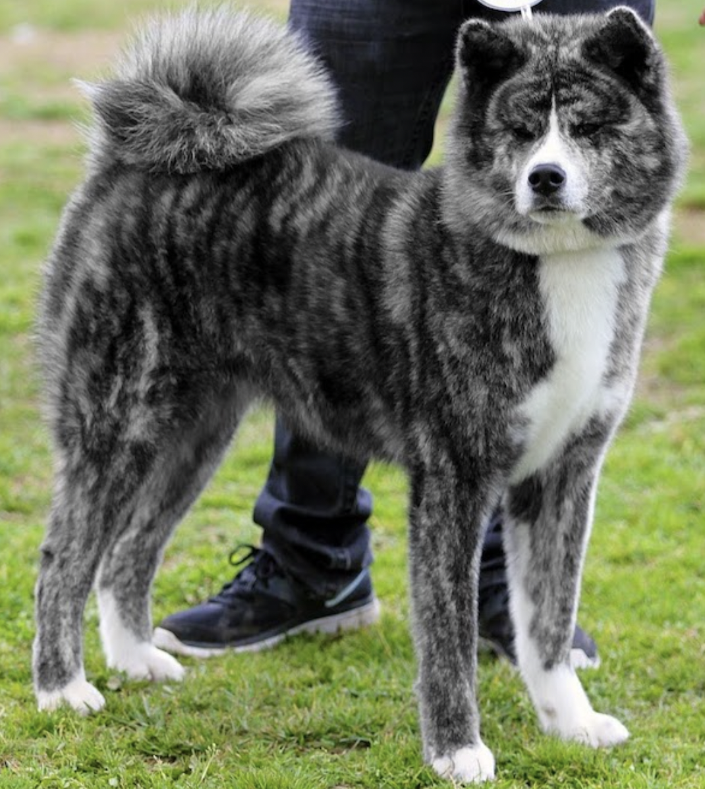
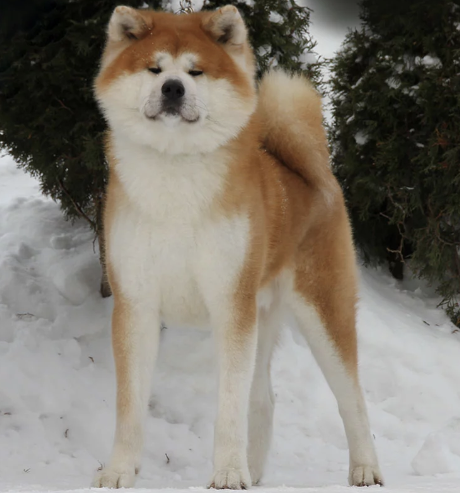
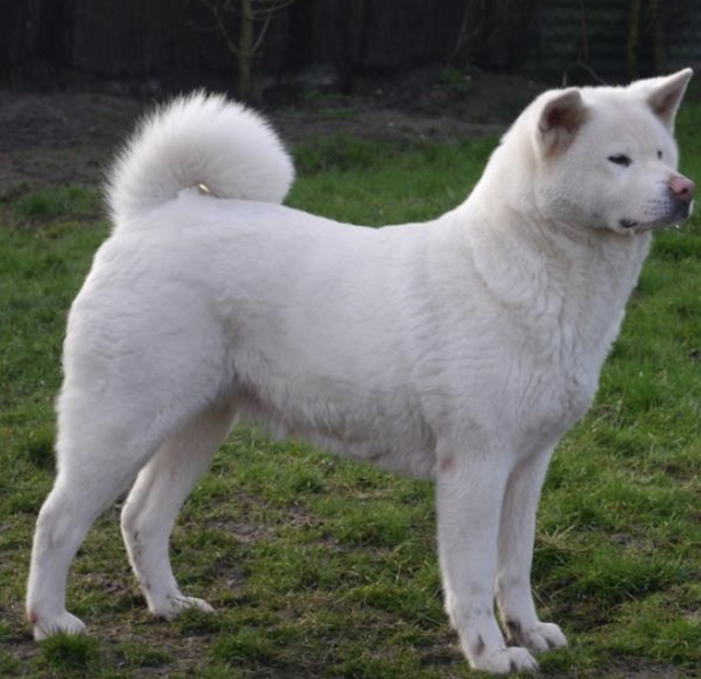
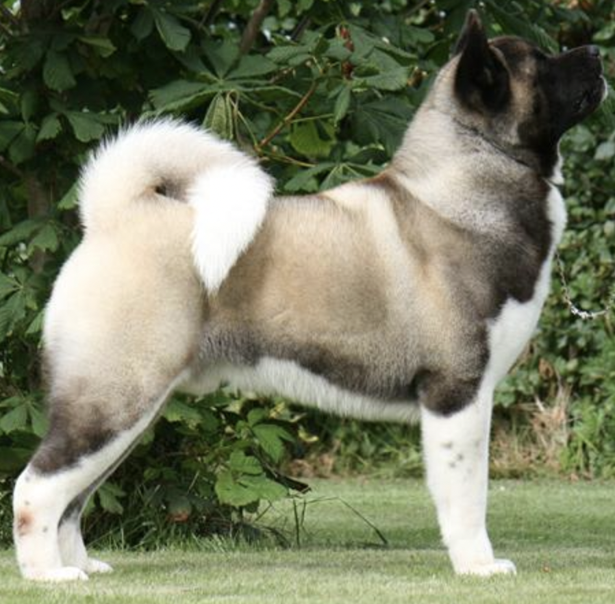

Японская акита — крупная шпицеобразная порода собак, выведенная в горных районах северной Японии как полуфункциональная охотничья порода. Японцы называют эту собаку «сокровище Японии». Высота в холке кобелей составляет 67 см, сук — 61 см, допускается отклонение ± 3 см. Вес — от 40—50 кг.
Шёрстный покров собаки породы акита стандарт FCI и стандарт АКИХО характеризуют следующим образом: Остевой волос жёсткий и прямой, подшёрсток густой и мягкий. Шерсть на лопатках и «штанах» немного длиннее, чем на других частях тела. Самая длинная шерсть на хвосте. Шерсть акиты должна состоять из трёх слоёв. Наиболее длинные волосы составляют верхний, наиболее грубый слой шерсти. Есть также жёсткий, но более короткий слой шерсти, и мягкий подшёрсток. Чтобы шерсть была правильной, все три слоя должны быть в наличии. Структура шерсти вносит значительный вклад во внешний вид и очень сильно влияет на впечатление, производимое собакой. Большое влияние на внешний облик собаки оказывает длина шерсти. Есть представители породы, имеющие более короткую шерсть, а есть обладатели более длинного шёрстного покрова. В любом из этих случаев, шёрстный покров соответствует стандартам, за исключением очень длинной и слишком короткой шерсти.
- тигровая (наличие белого, рыжего или черного цветов); 
- красная (имеет рыжий окрас, разбавленный белыми пятнами на лапах, животе и морде); 
- белая (без пятен и полосок другого цвета); 
- американская (отличается плотным телосложением и крупными размерами). 